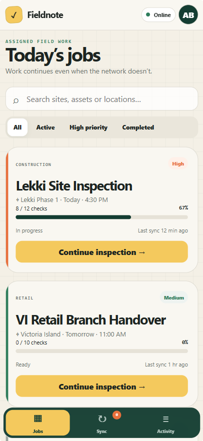
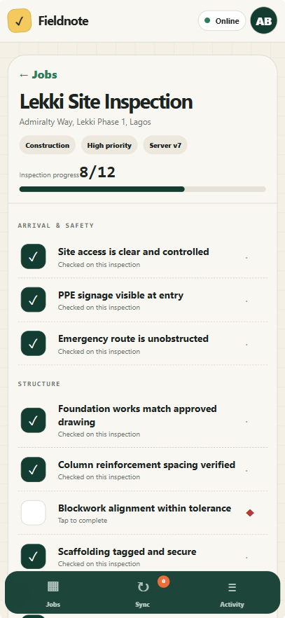
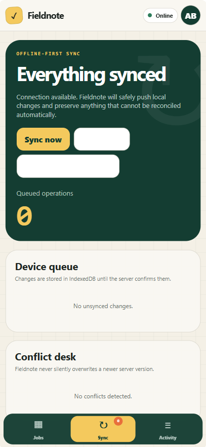
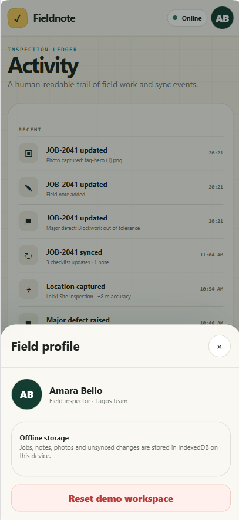
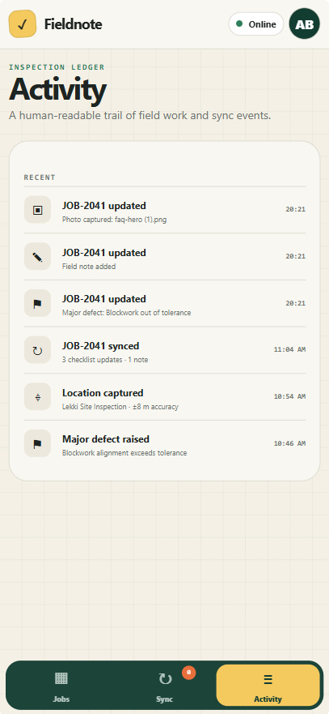
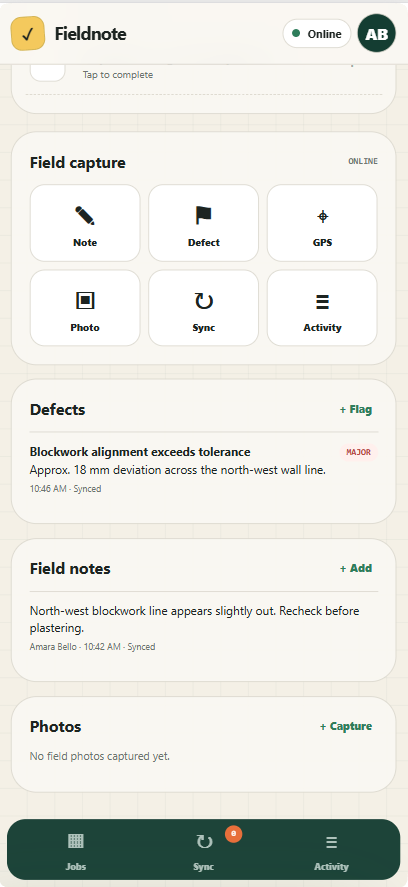

WORK OFFLINE
The product is designed around field work that may happen without reliable connectivity.


Inspection software has to remain useful in the exact places where connectivity is least dependable.
Fieldnote treats offline use as a primary product state, with touch-first inspection flows and later synchronization.
Fieldnote treats disconnected work as a normal operating condition. The interface records locally, makes pending state visible and only resolves the record when synchronization is verified.
Capture locally, expose queued state, synchronize deliberately and verify the result when connectivity returns.




This section reads the supplied artifacts as product evidence: what the interface has to keep understandable, connected or constrained.
The product is designed around field work that may happen without reliable connectivity.
Inspection data is organized for touch-first, on-location entry rather than desktop-first administration.
Offline, pending and synchronized states need to remain understandable to the person doing the inspection.
The record keeps the captured field information inspectable when connectivity returns.
A compact contact sheet keeps the page readable; select any frame to inspect it at full size.